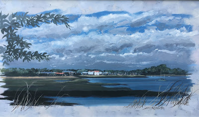
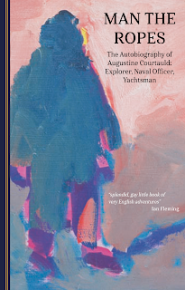
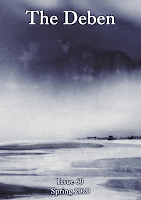
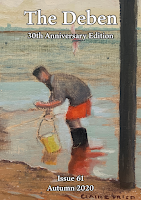
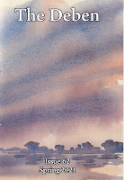

 |
| The River Deben from Kyson Point by John Roberts |
{kind=link}
I edit a small, local, bi-annual magazine for the River Deben Association in Suffolk. It’s the river’s parish magazine so (in the manner of parish mag editors) I take as much time and trouble as if it were Country Life or the National Geographic. My son Bertie manages the layout and we publish articles about birds and boats, people and paintings, saltmarshes and seawalls. I realise now that I was destined for the Deben from the day that my father (to be) returned from his RNVR service in World War 2 declaring that he never wanted to go anywhere else. So he set up a yacht agency. Less than two years later, my mother (to be) found her way to the river wanting to buy a boat… Skip along a few more years and a larger boat was purchased as my brother and I were demanding more space. Enter Peter Duck.
In 1960 a young artist named John Roberts arrived in Woodbridge on the River Deben, planning to buy a boat and sail away. He was dreaming of
Gaugin and the South Pacific. He bought one (from my father, I hope) then found himself and
his yacht next to Peter Duck for the winter. Pleasant undemanding
friendships develop in boatyards during the fitting-out season. John Roberts
and Dad presumably furrowed their brows and stretched their aching backs together.
I hope they complimented one another on their progress, even when it
might have seemed invisible to the detached observer. John took over the primus stove
that Dad was taking out of PD and, when spring came, he sailed no further. Why bother
with the South Pacific when you have the Deben on your doorstep?
A year or two ago Matt Lis, the manager of the boatyard where PD now resides sent me a message that he’d seen a panoramic painting of Woodbridge from downriver with Peter Duck on her mooring (far right of the painting, alone in contrast to the massed masts beside the central Tide Mill.). When I was looking for a cover image for the latest issue of the magazine, I remembered this and made contact with the artist, John Roberts. I was allowing myself a wry smile -- Peter Duck has spent all this summer in the boatyard shed having mid-life surgery. She hasn't even made it as far as that Kyson mooring. Essentially, however, my motivation was the ruthless singlemindedness of the editor: I thought the picture would look good on the front of Deben #63. (I sometimes remind myself of my heroine Lady Rhondda saying that she only had friends if she thought they were going to be useful to her interwar magazine, Time & Tide.)
In conversation I asked John if he’d known
my father: there was something I’d heard once which I’d never followed up…
He told me of the winter that his boat and Peter Duck had spent alongside each other in the yard. (Maybe it wasn’t that first winter of his arrival in Woodbridge but, in my story, that’s where it belongs.) He told me Dad had given him PD's old primus stove. That was the detail which that emboldened me to ask my real question.
(I remember that primus so
well, how I used to watch from the safety of my bunk as one of other of my
parents, pricked the burner, then pumped wildly to get the pressure up in its
tank and then there’d be the wild rush of black-tinged flame as the meths in
the lower cup caught fire unexpectedly…)
‘Someone told me you were with my father when he died…?’
My father had died of a heart attack in the Woodbridge branch of Barclay’s Bank. The rest of us were living away in Essex by then. I don’t think I’ll ever quite get over the shock of the moment my brother rang to tell me what had happened.
'Yes, I was,' said John, ‘I was standing behind him. He fell. He groaned, just
a few times then he went quiet. I went down beside him. I tried CPR but he had
gone. Other people, more expert than me tried as well but there was nothing.’
I won’t try to express what it means to know that there was someone who knew my father standing so close to him at that unimaginable moment of death. I’ll just say that Francis and I have bought that painting and it’s hanging above our bed. There's something about the solitariness of that yacht that occasionally constricts my chest. It has also made a very acceptable magazine front cover.
{kind=link}
When Dad had returned to the River Deben at the end of WW2 he scribbled his thoughts on a piece of paper which was tidied away in the aftermath of his death. More than thirty years passed before I took the trouble to sort through and publish some of his writing as The Cruise of Naromis. This is he had written after he'd come home from his service abroad:
I’ve lost faith in most of the things I used to have as
ideals or fancies. They’ve dulled and don’t fire me anymore. But one thing
still retains its fascination – mystery if you like – and that is the Deben. To
see it as I left it at eight o’clock last night with the sun setting low in the
west lighting up the fresh spring green of trees over Stonor Point and The
Tips, a single sailing ship beating down the Bowships on the last of the ebb
[…] then I know there is nothing I want more than to get back to this part of
Suffolk.
{kind=link}
I began researching the lives of other yachtsmen who’d volunteered for the navy in the years before the war began. There’ll be a book next spring from Adlard Coles called Uncommon Courage: the Yachtsmen Volunteers of Word War Two. Proofs have just arrived: it has a publication date, an ISBN, an entry on their website. https://www.bloomsbury.com/uk/uncommon-courage-9781472987105/ Yet the experience that has stayed with me is reading other people’s stories from that heroic generation (they didn’t choose to be heroes) and meeting some of the other daughters and sons (my generation) who have finally grown up sufficiently to analyse the effect of their fathers’ experiences on their own lives. At Golden Duck we're planning to publish a collection of such Yachtsman memoirs with introductions (where possible) from immediate family members.
 |
{kind=link}
Susie Hamilton was a very small child when her father, Augustine Courtauld, developed a particularly unpleasant form of multiple sclerosis. She hardly had time to know him before he died. We’re republishing her father’s sailing / wartime / exploration autobiography Man The Ropes, as the second in our Yachtsmen Volunteers collection, a companion to my father’s Naromis. They could scarcely be more different. Augustine Courtauld was wealthy, adventurous, brave, a polar explorer, hard-driving sailor, individualistic yet also dedicated to formal public duty. He left a yacht Duet which is now the longest-serving sail-training vessel in the UK. When Susie’s older brother asked her to contribute her memories of their father to the new edition she said she couldn’t, as she had none.
Then there was the question of a front cover for the new edition. Susie, an artist, admitted that she had found herself compulsively painting faceless, shadowed figures. As a young man her father (to be) had been buried for weeks under the Greenland icecap – his survival (and therefore Susie and her siblings’ existence) was almost a miracle. Among her paintings is one called ‘August’, an enigmatic, almost inhuman figure suffused with warm pink light as he emerges from months of darkness into the May sunshine. Susie was expressing in paint what she hadn’t formulated in words. She had often returned to read her unknown father’s autobiography. Now, re-reading once again, she has put her thoughts into words as well as paint and has written the introduction.
Although I have few memories, his personality and reputation have shadowed my life, influencing my paintings of figures (including polar explorers) struggling in wilderness. There is a beautiful entry in his diary about Arctic sun “casting its rosepink light along the snow and making shadows” that found its way into “August”, my picture on the cover of this book. He has always seemed to me to be a fiery, daimonic figure, a frightening but exciting wild-man who, though able to obey the conventions of society, in drawing rooms and committees, at dances and the Stock Exchange, really belonged out there in the sublime places of nature: the deserts, ice-fields, glaciers, oceans, mountains, fjords and rivers containing hippos and crocodiles.
Next week, in Woodbridge, beside the Deben, we have planned an event to thank the contributors to our cherished ‘parish magazine’ and to mark the republication of Man the Ropes. John Roberts and Susie Hamilton will be there. I hope they meet.
 |
| Artist: Sara Johnson |
{kind=link}
 |
| Artist: Claire Fried |
{kind=link}
 |
| Artist: Mary-Anne Bartlett |
{kind=link}
John Roberts https://johnrobertsonline.com/
Susie Hamilton http://www.susiehamilton.co.uk/
Visit the Golden Duck website https://golden-duck.co.uk